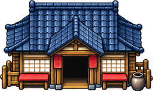
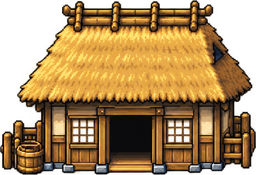
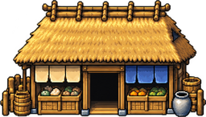
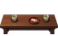
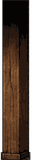
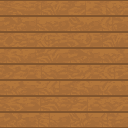
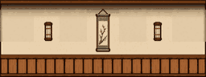
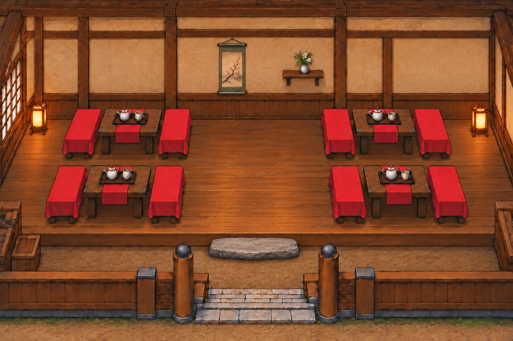

既存の採用素材と試作素材を原寸ドット表示で確認するための検査ページです。ゲーム内の画像・当たり判定は変更しません。室内原画と現行村の建物を比較し、修正対象を確定します。

assets/settlements/common-v1/tea.png
assets/settlements/common-v1/home.png
assets/settlements/common-v1/shop.png
接地2×1マス。拡大4倍。
接地1×1マス。拡大3倍。実際の描画は32px部品の組立を優先。
4×4セル、継ぎ目を確認。
漆喰・腰板と木柱の調和を確認。
原画は構図・素材感の基準。実装では32pxマスと同一カメラを維持。確認項目：輪郭の太さ、木材の明暗、色数、視点、緋月とのサイズ感。実機の室内描画検査は別工程です。